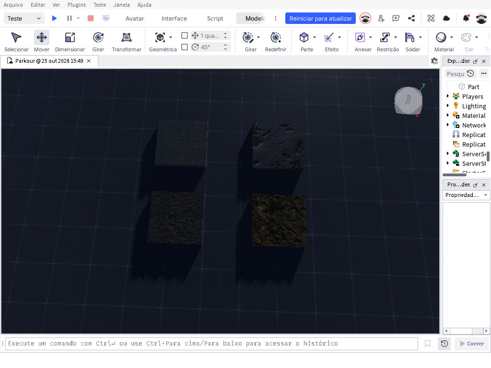
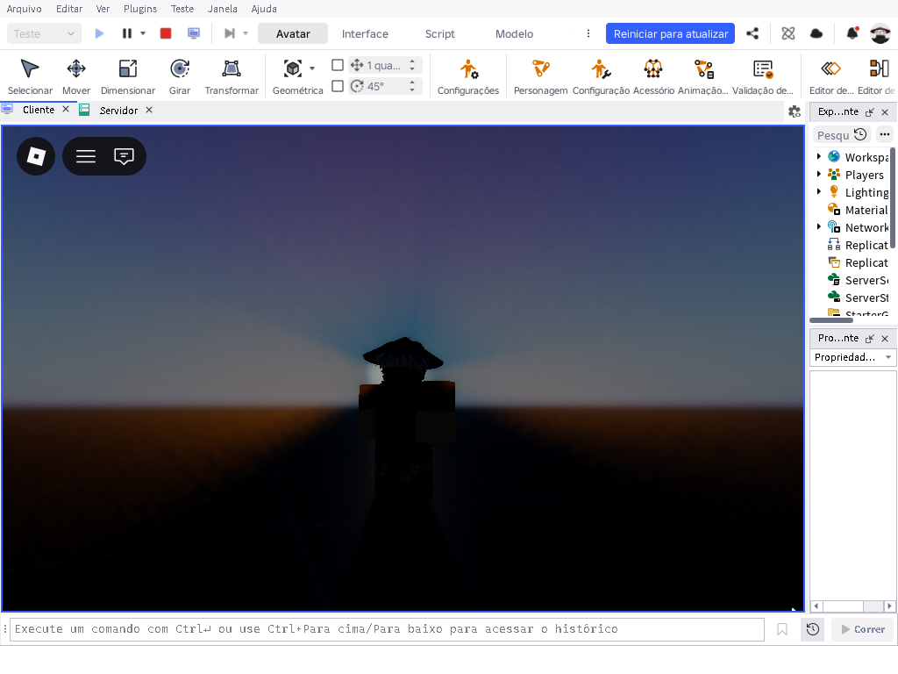
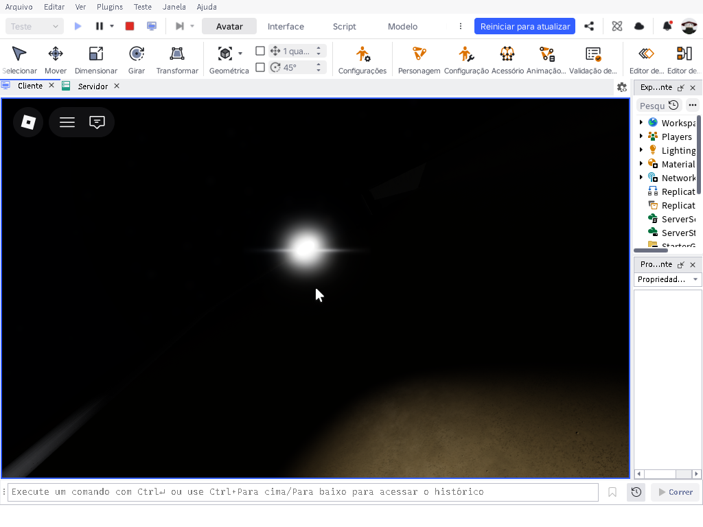

Vídeo do projeto 01Coloque video-01.mp4 na pasta assets
Projeto de animação
Substitua pelo nome e descrição do seu trabalho.
Criação de animações, iluminação realista e texturas PBR para dar mais presença, atmosfera e detalhe aos projetos.
Vídeos e imagens dos meus trabalhos
Substitua pelo nome e descrição do seu trabalho.
Substitua pelo nome e descrição do seu trabalho.

Substitua pelo nome e descrição do seu trabalho.

Substitua pelo nome e descrição do seu trabalho.

Feixe de luz criado no Roblox Studio.
Animação e sistema de sangue desenvolvido para Roblox.
Trabalho com animações de entrada e animações para personagens e experiências no Roblox.
Também desenvolvo iluminação realista e texturas PBR para acrescentar profundidade, materiais e detalhes aos ambientes e objetos.
Tenho cerca de 5 a 6 anos de experiência trabalhando e aprendendo nessa área.